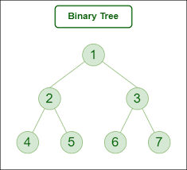

Trees
Trees
Trees are non-linear data structure where data are stored or data containing a hierarchical relationship b/w elements.
A binary tree is defined as a finite set of elements called nodes.

Traversing Binary Trees
There are three ways of traversing a binary tree T with root R.
Preorder
- Process the root R
- Traverse the left subtree of R in Preorder
- Traverse the Right subtree in Preorder
Inorder
- Traverse left subtree
- Process the root R
- Traverse Right subtree
Postorder
- Traverse left subtree
- Traverse Right subtree
- Process the root R